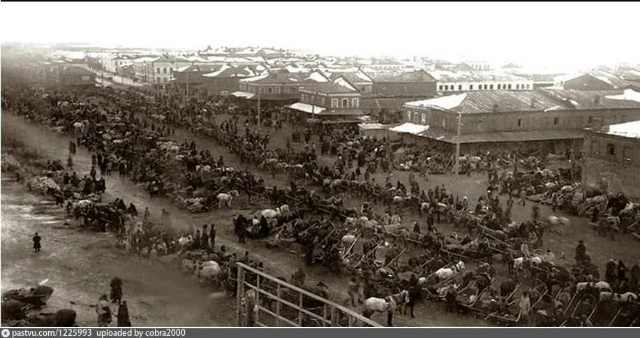

Ирбитская ярмарка
Вторая столица торговли
Ирбитская ярмарка — это не просто торговое событие, а настоящая легенда Урала и символ купеческого величия Ирбита. В XVIII–XIX веках она была второй по значимости в Российской империи после Нижегородской.

Сюда съезжались купцы со всей страны и из-за границы: из Китая везли чай и шелк, из Сибири — меха и драгоценные камни, из Европы — ткани и предметы роскоши. Ирбит на время ярмарки превращался в шумный, многолюдный центр, где заключались многомиллионные сделки, а на улицах звучали песни, музыка и звон монет.
Сегодня Ирбитская ярмарка — это живая традиция: город ежегодно возрождает купеческие традиции, проводя яркие фестивали, исторические реконструкции и народные гуляния.